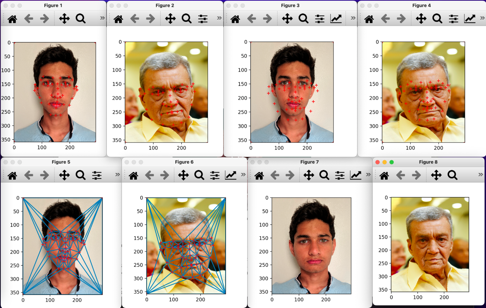
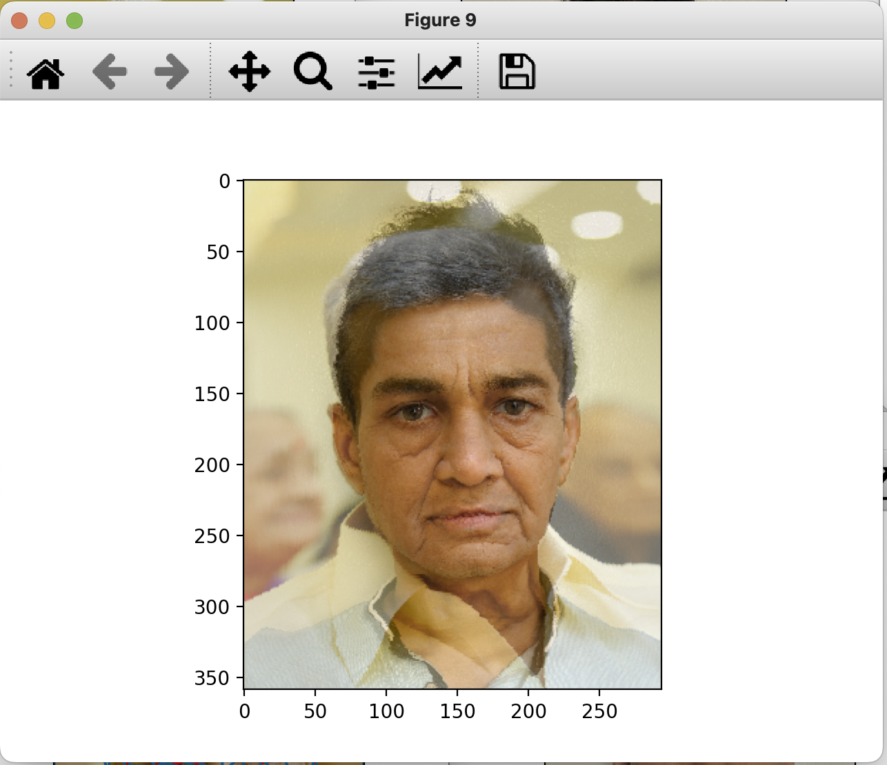
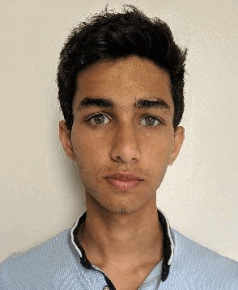
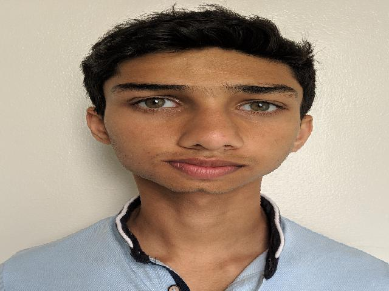

|  |
The objective of this project was to (1) to create an average face, (2) to create a face morphing video graphic, (3) to explore other creative uses of techniques used for (1) and (2), when given two photos of approximately similar area compositions (size of faces in relation to their backgrounds). For this, we need to define the abstract idea of an “average face” as the following: a face whose shape is an average of the shape of two given faces and whose color is an average between the colors on the two faces.
First, we manually select corresponding facial key points on both images (figure 1, figure 2). The averages of corresponding facial points are taken (figure 3, figure 4) and these average points are subjected to Delaunay triangulation in order to create an optimal face mesh (figure 5, figure 6).
Next, we perform the shape morph for each image to the average (figure 7, figure 8) by transforming every triangle in each of the two source meshes to its corresponding triangle in the average mesh. While the forward affine transformation is calculated for each pair of triangles (source to destination), the RGB values of the pixels in the destination image are populated iteratively using the inverse affine transformation of the triangle it is part of. This is a standard practice in computer graphics so as to ensure that there aren’t any black pixels in the destination image, which may occur if a particular pixel is not in the column space of any of the forward affine transformations. This is very possible since there are no constraints in the way triangles are stretched and compressed between the two shapes. We apply bilinear interpolation to get an RGB value for the pixel in the destination image from the source image.
|  |
Now, we have two images - the image that arises from source image one being morphed into the average shape and a similar image from source image two. Next, we perform a simple average color morph between these two to get the average face (figure 9).
To get the face morph video graphic, we first decide the number of frames we’d like to see in this gradual morph. This is an arbitrary number depending on how smooth one wants the morph to look. To create each frame, we repeat the above process with just one difference to the process - we take weighted averages in place of averages everywhere in the process (figure 10).
|  |
In our above approaches, a face is represented solely by its key points and obtaining an average face is simply taking the average of the key points of all the faces included and performing some calculations with these values. What if we found the average face of a population and measured the deviation of a particular face from that average and then exaggerated that deviation. Isn’t that essentially what comic/caricature drawings are - drawings of us with exaggeration of features that are unique to each one of us. This is exactly what we did to create a caricature of Anuj’s face. We used a pre-annotated face set (each face’s facial keypoints were already selected) to compute the average face and performed the above mentioned process between Anuj’s face and the average face to create his caricature (figure 11).
|  |
We could have more intelligently picked the initial points of each face: One option would be using a ML model and algorithm instead of manually picking each of the points. This other option is more sophisticated but would’ve been a better “out-of-the-box” solution.
The importance of assessing the achievability of a topic before diving in: We switched topics a few times, starting with Real-Time Facial Color Correction, then pivoting to Anisotropic Re-meshing, before finally settling on Face Morphing. We pivoted away from color correction based on our proposal feedback that the problem wasn’t very “graphic-y”. Anisotropic Re-meshing was super interesting, but we realized that the algorithms involved might be too complex to fully implement in the time we had. Finally, we settled on Face Morphing because it was more achievable, but also fun and interesting.
We all worked together to decide on a final project topic which was a significant amount of research work in the initial weeks as we changed topics multiple times. After that Anuj worked on finding key points and averaging them, as well as doing the Delaunay triangulation step to create the triangle mesh. Abhi and Somya worked on finding the inverse affine transformations in order to actually do the face shape morph. Melody worked on the face color morph and pulled in the pre-annotated face population data to create the caricatures. We worked together to debug, clean up code, and create the midpoint presentations and websites.